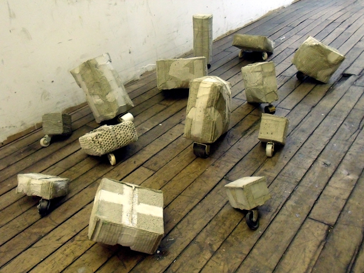
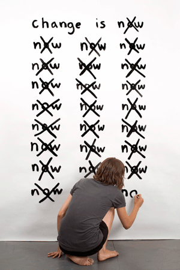
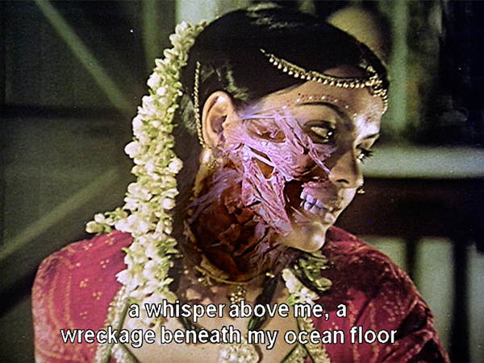
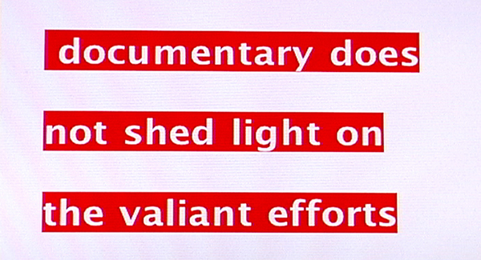

-
Apologies, Concessions, and Wild Gander at BRIC Arts
by Lauren DiGiulio May 18, 2010
What happens when we confront certain unavoidable aspects of history? How does our relationship to the past impact the way we negotiate the complexities of trans-cultural identity? Two shows at BRIC Arts Media search for reconciliation among the shifting landscapes of compromise and cultural dislocation.
As Aaron Lazare asserts in his book On Apology, “Remorse must accompany an apology as a sign of its authenticity.” A further show of humility is also essential, and shame is an appropriate complement to remorse. To apologize, therefore, is to directly confront our fallibility, to humbly admit the existence of our humanity. The work presented in Apologies and Further Concessions investigates the ways in which individuals and institutions respond when forced into a confrontation with their own inadequate past.
Institutional and individual concessions alike juxtapose to create a playful, if rather melancholic, rhythm throughout the show. Tim Thyzel’s Wheelies, a group of cast concrete blocks placed on inept wheel appendages, recasts the familiar form of wheeled handcarts used by transient urbanites. Thyzel expands the reference to assert the ultimate impotence of our individual modes of adaptation. Lying derelict upon the gallery floor, the objects elicit our sympathy while playing out a dark satire of the unique awkwardness such futility engenders.
Other pieces apprehend impossibility in a slightly different way. Jennifer Grimyser’s Change is Now chronicles the artist’s performance at a Chicago gallery in 2007, wherein she wrote the title phrase on a wall, crossing out the last word and rewriting it at five-minute intervals. After three hours, her work clearly documented the limits of her language suspended against the movement of time.
A book project by Melissa Dubbin and Aaron S. Davidson uses a form of natural disaster — earthquakes — to inquire after the status of knowledge amidst the tenuousness of human institutions. Fallen Books gathers photographs taken from various libraries in the moments after an earthquake has toppled the bookshelves. Assembled chronologically with documentation of place, time, and local media coverage, the collection becomes both an archive of these seismic events and an active participant within the depicted systems. A certain beauty appears within the disorder as we are reminded of the formerly material nature of the archive. The scattered, multicolored volumes mime the fragility of our organizational systems.
Other work takes on the complications proper to government-issued apologies. Hong-An Truong’s (who, full disclosure, writes for this magazine) video installation A Measure of Remorse engages the complexities associated with Japan’s official 2005 apology to China for its aggression during World War II. Composed of gently floating images of a Chinese novelist, the Japanese ambassador to the US, and an American journalist, by turns sitting quietly alone and embracing in slow duets, set to a subtle score of news clips surrounding the event, the piece becomes a powerful landscape, complicating our assumptions. Going beyond official apologies A Measure of Remorse offers a subtle suggestion of how we might bring the complex relationships between apology, forgiveness, and reconciliation into better focus.
By turns sardonic, poignant, and quietly melancholic, the pieces in Apologies and Further Concessions create a lyric rhythm that explores the surface of these reactions without ever cutting too deep. The result is a vague tension that never quite resolves itself. But this is the point. To the extent that apologies are at once an admission of guilt and the beginning, perhaps, of a concerted attempt at remedying injury, they necessarily remain unresolved, extending far into the future.
A Wild Gander, curated by Baseera Khan, presents the work of five New York-based artists affiliated with the South Asian Women’s Creative Collective. The show’s theme takes inspiration from Joseph Campbell’s collection of essays entitled The Flight of the Wild Gander, wherein he describes the Sanskrit concept of the para mahamsa, a spiritual teacher who is able to transcend earthly banality much the way that geese are able to transcend gravity through flight. The work of the artists presented here explores the liminal spaces created by migration, digital communication, and inter-cultural identity, negotiating them in an effort to create trans-local dialogues.An ironic text-based installation by Divya Mehra drolly asks after the show’s relationship to identity, scrawled vertically across the gallery floor and wall, it reads, “I’m Indian, so I’m in this Show.” A video installation by Mehra, situated nearby, is composed of a pile of 27 televisions that simultaneously play a loop of the artist in performance. Directly addressing the camera, Mehra asserts one phrase delivered in multiple styles: “I am a lot like Bruce Nauman.” The satiric performance, repeated throughout the 27 video channels, results in a cacophony of sound and image that foregrounds Western art historical influence while simultaneously rejecting, through parody, the appropriation of its instinct towards domination.
Some work reacts to commonly exported depictions of South Asian culture. Chitra Ganesh plays with lenticular photography to subvert traditional notions of Indian femininity in two photographic installations. Here, the artist disfigures the face of a Bollywood heroine to produce continuously shifting images that gently mar a culture’s historic expectations of beauty.
Jesal Kapadia’s series of prints entitled Ditto, or “the same as what has been said” pairs iconic works by Western male artists with found images of similarly shaped South Asian industrial structures. The form of Buckminster Fuller’s concept for his Geodesic Dome City is compared to a row of large kilns, while the shape of Smithson’s Spiral Jetty is echoed in the form of a spinning industrial machine. The juxtaposition of these images here snickers at the presence of an apparently universal aesthetic sensibility that lithely transcends geographic and cultural boundaries.
Overall, the artists here adroitly navigate their various cultural and aesthetic influences to celebrate local dialogues within a broader landscape of cross-cultural discourse. Many go further, asserting the efficiency of these investigations taken on their own terms. The resulting work feels both inquisitive and self-assured.
Presented together, the shows offer several, subtle examinations of how we come to terms with ourselves within a large confrontation with established systems of social interaction and cultural representation. In both cases, the supplementary literature accompanying the exhibition proves to be a bit too explicit. This results in a presentation that feels slightly too conceptually controlled, leaving little room for playful interpretation. Yet given the focused scope of the subject matter, such precision can be appreciated, to the extent that it allows for the illumination of such intimate mediations.
Apologies and Further Concessions, curated by Erin Sickler, and A Wild Gander, curated by Beseera Khan, were presented at BRIC Arts Media from March 25- May 1, 2010.